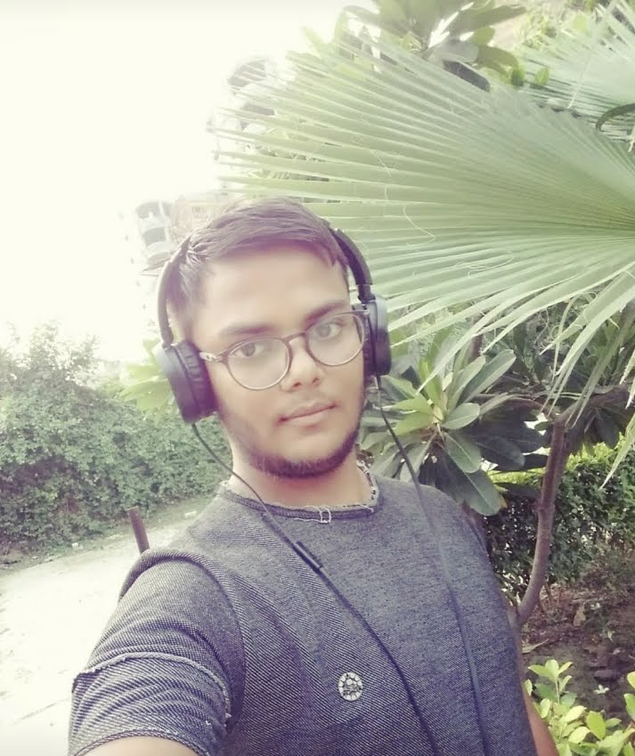

|
Our DNA: International, Quality, Diversity |
At Artzolo, we are convinced that the |
In showcasing artists around the world, we |
|---|
THE ARTZOLO TEAM
|
Arpit Singh Yadav Co-Founder "Digital technology is a remarkable tool for |
 Ashish kumar Co-Founder "Since a photograph by Robert Capa completely changed my life, I want others to experience the emotional power of art and give them the possibility that I never had, to spend everyday with the work of art that affected them." |
Ashraf Zeya Co-Founder "Drive, diversify, run into walls, backtrack, try again can be said about the journey of an artist, just like an entrepreneur." |
|---|